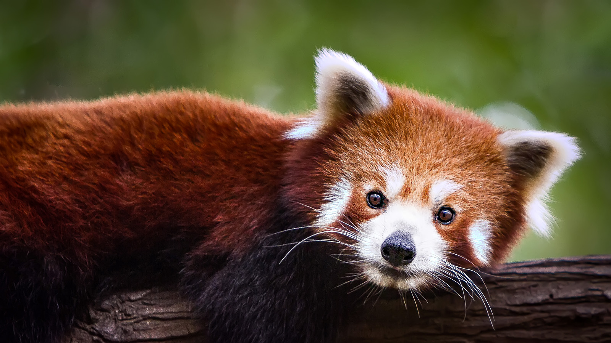

Main Content
Here is some information on a red panda. The Red Panda is slightly larger then a domestic cat with a bear like body and thick russet fur. The belly and limbs are black, and they are white markings on the side of the head and above its small eyes. Red Pandas are very skillfull and acrobatic anaimals that are predominatly stay in trees. Almost 50 percent of the Red Pandas habitat is in the eastern Himalayas. They use their long, bushy tails for balance to cover themseleves in winter, presumably for warmth. Primarily an herbavore, the name panda is said to come from the Napil word Ponya which means bamboo or plant eating animal. We should care about it at some degree because the loss of nesting trees and bamboo is causing a decline in red panda populations across much of their range because their forest home is being cleared.We can help in two big ways one is to work together to solve the worlds greatest environmental problems and protect our forest. You can also make a symbolic red panda adoption to help save some pandas.
Section 1
Two varieties of pandas have long been suspected, based on physical features but genetic evidence has been lacking.
Section 2
Nevertheless, the two are: the chinese and Himalayan red pandas.
Section 3
These should be regarded as seperate species, say researchers in China. Chinese pandas have redder fur and striped tail rings. Himalayan pandas have whiter faces.
- Body length: 50-64 cms
- tail length: 28-50 cms
- weight: 3-6 kgs
Section 4
More of what these pandas eat include grasses,roots,fruit,grubs, bird eggs and small vertebrates.
They can also make nests in tree holes, branch forks and tree roots. So let's help protect our furry friends with all this new found information.